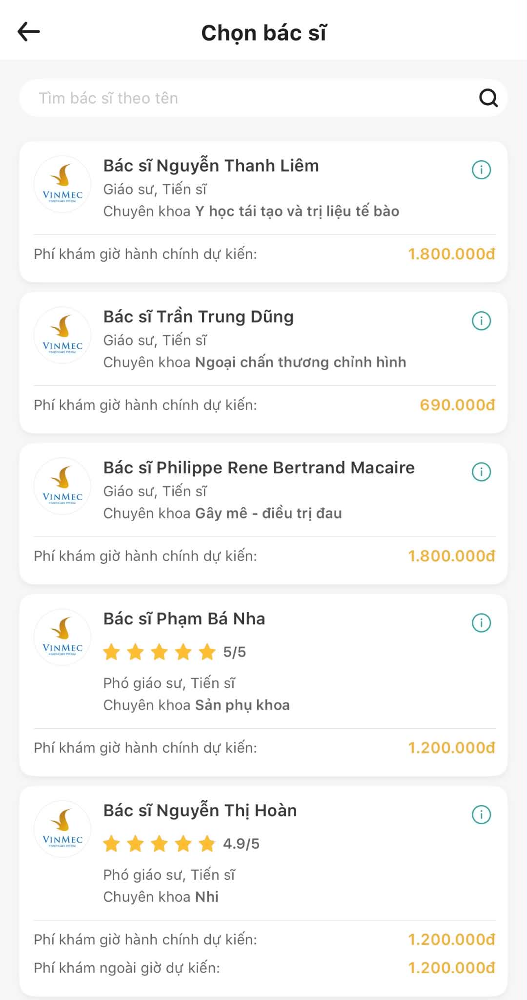
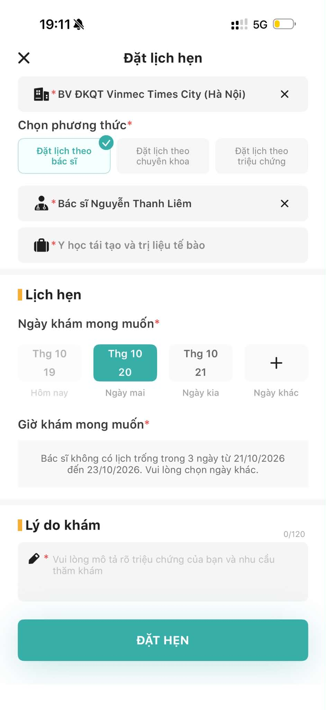

P1 · Từng dùng MyVinmec
CÓ VƯỚNGThường đặt lịch qua điện thoại; muốn biết rõ giờ và thông tin bác sĩ.
“Không chọn được giờ phù hợp.”
Khi cần khám gấp hoặc chưa biết bác sĩ nào phù hợp, P1 thường gọi để hỏi thêm.
Một vòng khám phá hẹp trong hành trình đặt lịch ngoại trú trên MyVinmec: từ lần dùng thử, phỏng vấn, đến prototype và phản hồi ban đầu.
Trong lần tự thử, tôi chọn người đứng đầu danh sách; màn hình lịch sau đó báo không có giờ trống trong ba ngày đã kiểm tra.

Bác sĩ xuất hiện đầu tiên trong danh sách. Danh sách hiển thị bác sĩ từ nhiều chuyên khoa.
Ảnh chụp nguyên bản do ứng viên cung cấp; chỉ thu nhỏ theo tỉ lệ, không dựng lại giao diện.

Tôi chọn bác sĩ xong mở lịch; ứng dụng báo không có lịch trống từ 21 đến 23/10/2026.
Tôi bấm kiểm tra tiếp lịch ba ngày gần nhất nhưng vẫn không thấy giờ trống.
Ảnh gốc được giữ nguyên, chỉ thu nhỏ theo tỉ lệ để trình chiếu.
Khả năng đặt được lịch chỉ rõ sau khi mở hồ sơ bác sĩ. Nếu hết lịch, người dùng phải tự đổi ngày hoặc quay lại tìm người khác.
1 lần audit · chưa phải kết luận phổ biếnPhỏng vấn giúp đặt trải nghiệm cá nhân vào bối cảnh; tín hiệu hiện có đáng tìm hiểu thêm, nhưng chưa cho biết vấn đề phổ biến đến đâu.
Thường đặt lịch qua điện thoại; muốn biết rõ giờ và thông tin bác sĩ.
“Không chọn được giờ phù hợp.”
Từng đặt lịch ở cơ sở công và qua một ứng dụng khác.
“Suôn sẻ.”
Đặt qua MyVinmec nhìn chung ổn; đã gặp lúc bệnh viện đông.
“Đặt lịch rồi nhưng đông vẫn phải chờ.”
P1 muốn lịch và thông tin bác sĩ rõ hơn; cũng có trải nghiệm tự đặt lịch suôn sẻ.
Không thể nói toàn bộ người dùng gặp khó. P2 và P3 cho thấy vẫn cần giữ quyền tự chọn và không hứa hết thời gian chờ.
Hành trình trong phạm vi bài tập: từ mở đặt lịch đến lúc tìm ra giờ phù hợp hoặc phải tìm phương án khác.
Muốn biết nên bắt đầu từ chuyên khoa hay từ tên bác sĩ.
Ghi nhận trong lần auditDanh sách có nhiều chuyên khoa; người thử chọn bác sĩ đầu tiên.
Hành vi cá nhân, không khái quátKhả năng đặt được giờ chưa rõ ngay trên danh sách.
Quan sát trên màn hìnhThông báo hết lịch; chưa thấy đường tắt rõ để so lựa chọn cùng khoa.
1 bác sĩ · 1 lần kiểm traNgười dùng phải tự tìm bước tiếp theo; cần kiểm chứng với thêm người.
Cơ hội thiết kế, chưa phải kết luậnTrong lần audit, lịch của bác sĩ được chọn không còn giờ từ 21–23/10/2026. P1 cũng muốn thông tin giờ khám rõ hơn.
Khi bác sĩ hết lịch, người dùng có muốn xem bác sĩ khác cùng chuyên khoa, đổi cơ sở hay đổi ngày trước?
AI hiểu yêu cầu đặt lịch bằng lời thường, chuyển thành bộ lọc để người dùng kiểm tra rồi xem giờ còn trống.
Làm sao để AI hiểu yêu cầu đặt lịch bằng lời thường, đưa ra bộ lọc dễ kiểm tra để người đã biết chuyên khoa tìm giờ phù hợp mà vẫn tự chọn bác sĩ?AI hỗ trợ tìm kiếm và so lịch; người dùng xác nhận nhu cầu và quyết định đặt với ai.
Người đã biết hoặc đã chọn chuyên khoa, muốn tự chọn bác sĩ hoặc tìm giờ sớm.
Khả năng còn lịch có thể chỉ rõ sau khi mở hồ sơ từng bác sĩ.
Chuyển mong muốn thành bộ lọc rõ ràng, tìm lựa chọn còn giờ và giải thích vì sao được gợi ý.
Người dùng có thể nhập yêu cầu bằng lời thường. AI hỗ trợ lấy ra chuyên khoa, cơ sở, ngày; người dùng kiểm tra rồi mới xem lịch.
Chọn hướng tìm phù hợp với nhu cầu của mình.
Nếu bác sĩ đã chọn hết lịch, vẫn có đường sang lựa chọn cùng khoa.
Y học tái tạo và trị liệu tế bào · Hết giờ trong 3 ngày
Cùng chuyên khoa · phí tham khảo 690.000đ
Cùng chuyên khoa · lựa chọn thay thế
Cả ba cho biết luồng dễ tìm lịch hơn và gợi ý có ích; buổi thử đánh giá prototype mô phỏng, chưa đánh giá chất lượng AI thật.
| Người thử | Hoàn thành | Thời gian | Mở lại lịch / quay lại | Bộ lọc mô phỏng |
|---|---|---|---|---|
| T1 | Có | 2 phút | 0 | Đúng |
| T2 | Có | 4 phút | 1 | Đúng |
| T3 | Có | 2 phút | 0 | Đúng |
Prototype mới mô phỏng hướng giải quyết; cần kiểm tra AI hiểu đúng yêu cầu, dùng nguồn lịch đáng tin và có quy trình an toàn.
Đây là công cụ tìm lịch sau khi người dùng đã biết chuyên khoa.
Chỉ lấy dữ liệu từ nguồn lịch được phép; kiểm tra lại trước xác nhận.
Không giữ người dùng trong luồng đặt lịch thường; không hứa giờ hẹn sẽ hết chờ.
Ghi rõ điểm dừng, lần quay lại, hiểu nhầm và phản hồi; không tạo trích dẫn sau buổi thử.
Kiểm tra người dùng có tìm được giờ và giữ đúng lựa chọn bác sĩ/cơ sở không.
Xác minh độ mới của lịch, quyền truy cập, bảo mật và cách hỗ trợ khi không có giờ.